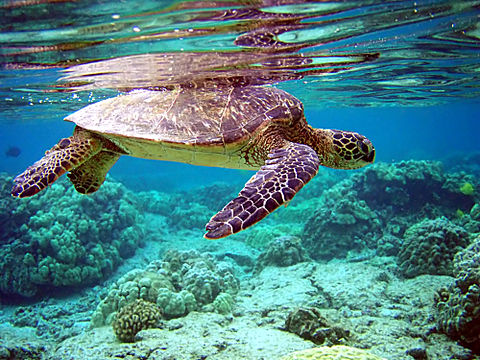
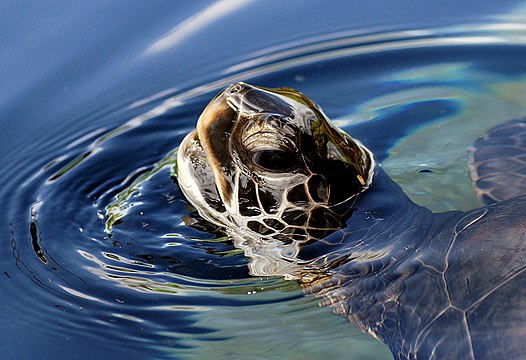
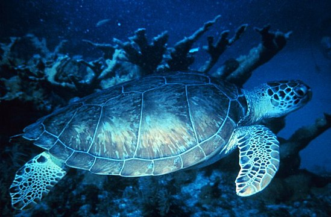

What is Green Sea Turtle?
The green sea turtle (Chelonia mydas), also known as the green turtle, black (sea) turtle or Pacific green turtle,[3] is a species of large sea turtle of the family Cheloniidae. It is the only species in the genus Chelonia.[4] Its range extends throughout tropical and subtropical seas around the world, with two distinct populations in the Atlantic and Pacific Oceans, but it is also found in the Indian Ocean.[5][6] The common name refers to the usually green fat found beneath its carapace, not to the color of its carapace, which is olive to black.
This sea turtle's dorsoventrally flattened body is covered by a large, teardrop-shaped carapace; it has a pair of large, paddle-like flippers. It is usually lightly colored, although in the eastern Pacific populations parts of the carapace can be almost black. Unlike other members of its family, such as the hawksbill sea turtle, C. mydas is mostly herbivorous. The adults usually inhabit shallow lagoons, feeding mostly on various species of seagrasses.[7] The turtles bite off the tips of the blades of seagrass, which keeps the grass healthy.
Like other sea turtles, green sea turtles migrate long distances between feeding grounds and hatching beaches. Many islands worldwide are known as Turtle Island due to green sea turtles nesting on their beaches. Females crawl out on beaches, dig nests and lay eggs during the night. Later, hatchlings emerge and scramble into the water. Those that reach maturity may live to 80 years in the wild.
C. mydas is listed as endangered by the IUCN and CITES and is protected from exploitation in most countries.[8] It is illegal to collect, harm or kill them. In addition, many countries have laws and ordinances to protect nesting areas. However, turtles are still in danger due to human activity. In some countries, turtles and their eggs are hunted for food. Pollution indirectly harms turtles at both population and individual scales, as well as light pollution. Many turtles die after being caught in fishing nets. Also, real estate development often causes habitat loss by eliminating nesting beaches.
